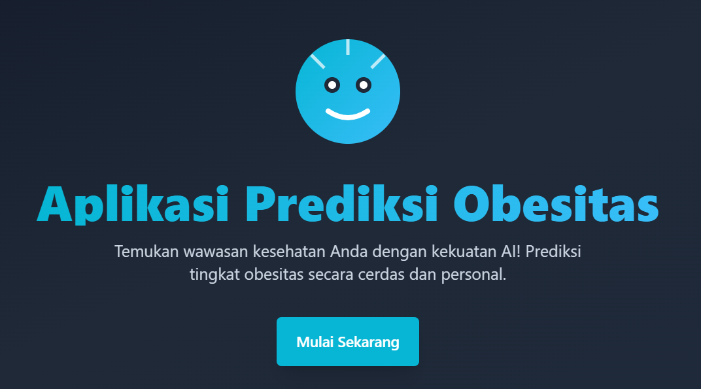

Trisna Julianto
Member Baru Pejuang Pemrograman
Halo! Saya Trisna, seorang mahasiswa yang sedang menempuh pendidikan di Universitas Indonesia, Jakarta. Saat ini, saya berada di semester 5 dan memiliki minat yang besar dalam bidang pemrograman. Saya sangat antusias untuk terus belajar dan mengembangkan keterampilan saya di dunia teknologi.
let's talk
